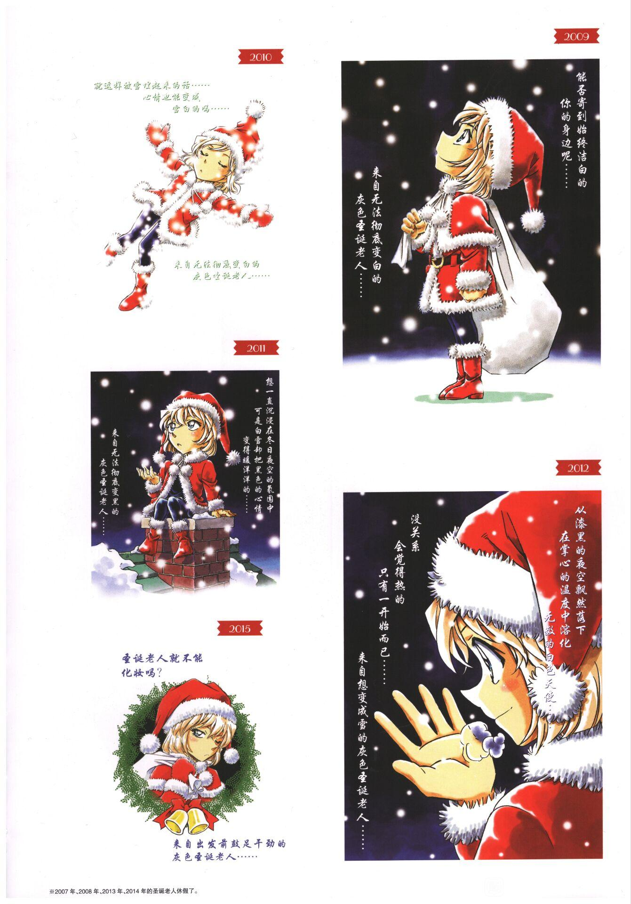
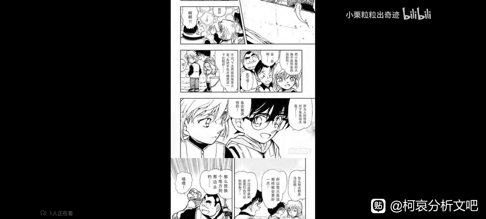
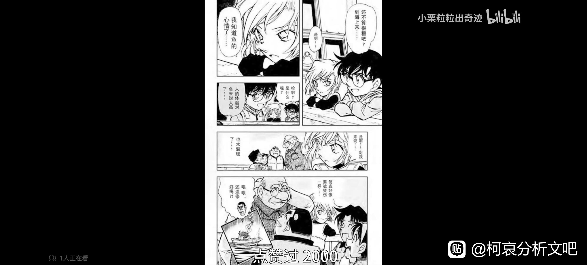

在柯吧整理了历年圣诞图，然后发现2009-2012这几年不仅画面是连贯的（背着大礼物袋望着飘舞的雪➡️放下袋子埋进雪里➡️起身想接住雪花➡️发现雪花融化在了掌心…），而且文字也简直在诉说自己的心路…

2009，“能否寄到始终洁白的你身边呢”，『你』是谁呢…我认为是明美，这时候自称无法彻底变白，可见哀对自己的认定偏向于黑…
2010，哀酱依然心情不好呢…
2011，“可是白雪却把黑色的心情变得暖洋洋的”，可是有人却把将要融于黑色的你变白…你也发现了并称“无法彻底变黑”
2012，“觉得热的只有一开始而已”，初次感受到温暖的你一定也被灼烧一般吧…就像『丸见码头的惨剧』中柯南对你说的“下次把鱼放回海里之前，先用水浸没一下双手比较好，因为人的体温对于鱼来说太高了，会被烫伤！”你想到了自己，而正因你经历过，才可以告诉无数漫天飘舞的雪花“大丈夫，会觉得热的只有一开始”（2012年圣诞）
2010，哀酱依然心情不好呢…
2011，“可是白雪却把黑色的心情变得暖洋洋的”，可是有人却把将要融于黑色的你变白…你也发现了并称“无法彻底变黑”
2012，“觉得热的只有一开始而已”，初次感受到温暖的你一定也被灼烧一般吧…就像『丸见码头的惨剧』中柯南对你说的“下次把鱼放回海里之前，先用水浸没一下双手比较好，因为人的体温对于鱼来说太高了，会被烫伤！”你想到了自己，而正因你经历过，才可以告诉无数漫天飘舞的雪花“大丈夫，会觉得热的只有一开始”（2012年圣诞）
b漫不让截图，用一下小栗的


我觉得“始终纯白的你那边”应该是指柯吧
2023-11-27 05:57 | 就俺啊:emmmm也对，我本来也觉得是柯南的，不知道为啥脑子一转突然觉得是明美2023-11-27 05:59 | 贴吧用户_GWPbNEU:回复 就俺啊 :emmm，其实姐姐也不是始终纯白吧(没有骂姐姐的意思)
B漫这个你可以PC端用QQ截图截，手机端录屏再截就行，没啥卵用
还有吗
2023-11-27 05:56 | 就俺啊:你是说图还有吗还是分析还有吗，图还有…但是鄙人不擅长分析，且准确来说这篇也不太算分析，算是我发现的青山的一个小呼应…2023-11-27 06:02 | MC像素时光:回复 就俺啊 :奥
现在好多了